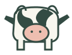

A legelő most mindenkinek elég
Kilenc tehén legel a közös területen. Egy állat naponta 10 liter tejet ad.

9
tehén a legelőn
10 liter
tej a tehéntől naponta
10 liter
egy gazda napi hozama
Gondold végig: Mitől függ, hogy a legelő a következő napokban is elegendő táplálékot ad-e?